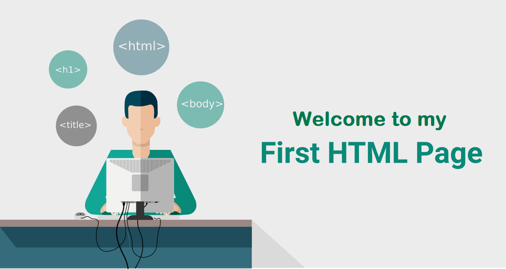
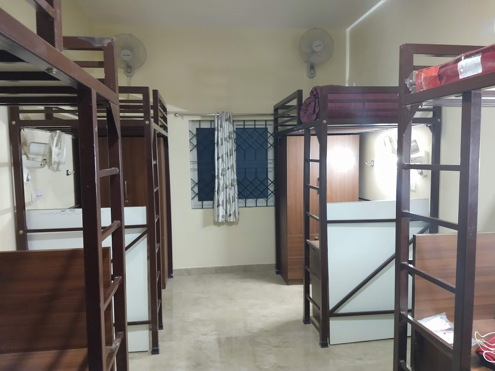
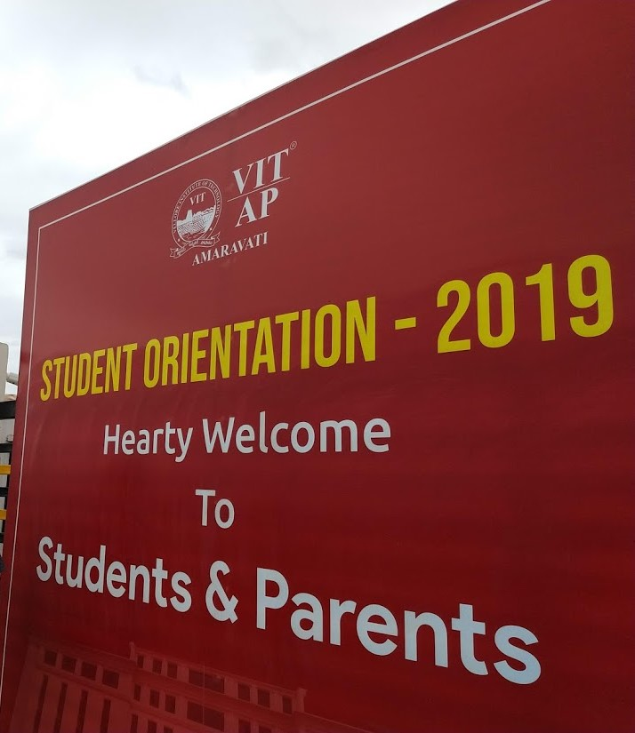
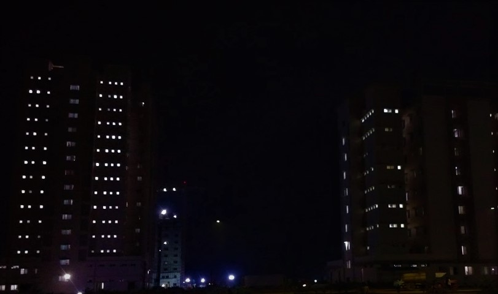
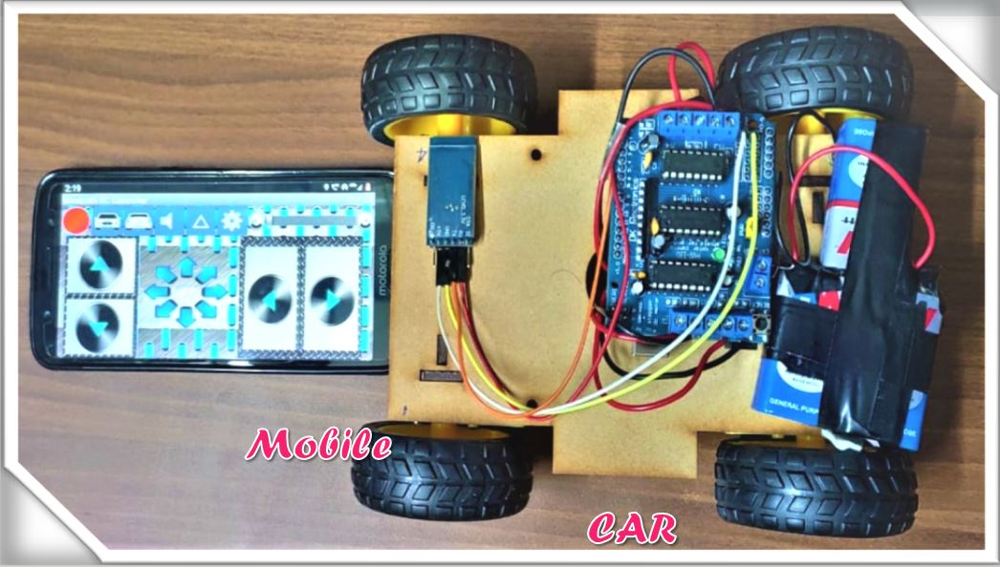

You clicked on the section 1 link and your are redirected to this section. My first day at VITAP is really an astonishing day in my life. I came with a luggage in one hand and certificates in the other hand. I thought that my career is going start right at this moment when I stood in a line for collection my hostel room keys. I saw my parents feeling proud that I am going to work hard with enormous source of learning. That moment I just looked at them and smiled. Finally my turn has come and I submitted my affidavits and required certificates. I was alloted a hostel room number 311. I thought that 3rd floor is extreme to climb and it's okay when I realised it is a 14 floor building. I took all my luggage and moved towards the lift. I got into 3rd floor and was searching for 311. Finally I found it and opened the door and entered. I was amazed to see that hostel room was extremely colourful stylish clean and new. I found that there is no one in the room and placed all my luggage in my cupboard and I clicked some pictures of the room and some selfies. Finally, I went downstairs to meet my parents. I was excited to describe my parents about my hostel room and showed the pics I clicked and talked to them. There are very few people who came on the first day. So, my father had a plan of taking me to nearest temple and spend some time there. My father talked to Hostel Incharge and was permitted one day outing. I wrote some formalities and left the college soon. Anyways, everyone's 1st day hostel experience is weird and exciting but mine was astonishing.

You clicked on the section 2 link and your are redirected to this section. That day I came back to hostel after having lot of fun. I attended the counselling for B.Tech in Computer Science and Engineering(Core). I learnt about some rules, regulations, academic plan and curriculum details of Academics. At the end of the session, they declared that they are going to conduct an examination on English grammar and Logical Reasoning and aptitude in that evening. Listening to this, I shocked and later realised that this is very common since I had attended lot of such examinations in my Narayana Life. I informed this to my parents and they said you can do everthing. The evening has arrived and I wrote the exam by that time my parents waited for me in the downstairs. I came and told them about my first exam experience at VIT. Later on, My parents wished me all the best and they left to home by college bus. I slowly started walking towards my hostel block and someone called me from behind. I heard my name, I was suprised to see who it was. I turned back and noticed that it was my Inter friend who was my classmate and didnot had any information that he joined here. I was happy that I got someone who knows me prior and we together went to hostel and talked sometime and had our dinner.

You clicked on the section 3 link and your are redirected to this section. After having Dinner, I reached my room and noticed that someone was there. It was my roomate and I introduced myself and we just talked about our life experiences of coming here and all about our 10th 12th class memories and we laughed. That night we played a game that my roomate brought from home. It was UNO Cards. I am one of the champ in playing it. We played till 11p.m and I won almost 12 games. That day they decided me I am a talented guy. I laughed and we planned to watch a horror movie. My friend brought his laptop to my room and we covered all the windows and gaps with newspapers and turned off the light so that room is dark enough to have a thrill. We played the movie named "The Nun". Everyone enjoyed the movie and it was 2pm then. The was finished and everyone went to bed. It was my eternal experience that I will never forget in my life.

You clicked on the section 4 link and your are redirected to this section. When you are staying in hostel you are never alone. There is so much people coming and going that you probably can’t remember them all. You can make great friendships in the hostels. Hostels are the way to make great friendship. Some of these people who you meet might stay your friends forever, some of them you will never see again in your life but you will have great memory from city far away and after couple of years you might not even remember the city just the amazing people you spend time with. I made lot many friends there. My roomate introduced his friends. We friends enjoyed dinner together, the endless night chats, and our warden trying to catch us for making a sound at night….those are fond memories. I believe you have to experience hostel life once in your life.
You clicked on the section 5 link and your are redirected to this section. After spending some time with my friends, we got a mail from academics about Engineering Clinics. It was about a project to be finished as soon as poosible with a team of 5 or 6. We choose a team of 6 and one member from our team left the college. Later we selected a guide and worked on this project. My first project was named as Bluetooth Control car. This was my first big project I worked. Learned many new things and lot of experiences. It was amazing completing this project and updating the status of this before the clinic deadlines. We are tensed and worked constantly and finally I contributed my best in this.

Back to top: Back to Top
Gudi Varaprasad © Copyright
Contact us at my Facebook Page ! Facebook
Mail us to gudi.varaprasad@gmail.com Email
link to my GITHUB page ! GITHUB
Page 2